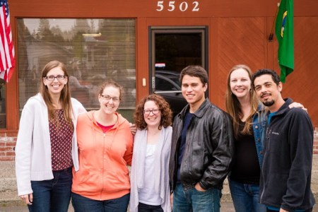

Action International: Friend or Foe?
It might seem strange to ask whether a missions board is the “friend or foe.” I know that some of you are probably saying to yourselves, “How could a missions board possibly be the enemy?” Then again, I also know that some are asking with just as much bewilderment, “How could a missions board possibly be anyone’s friend!?!?”
To be honest, while I know that in general missions boards are there to help, all too often it doesn’t feel that way. The whole process of finding a missions board, applying, going through orientation, and following all of their rules can feel like just a giant hoop to jump through. And isn’t missions the job of the church, not some “parachurch organization”? Then, on top of that, they’re taking this huge percentage off the top of an already strained income, and you find yourself wondering if there is a better way.
Now, admittedly, there are some missionaries for whom it makes more sense to go independent. However, there are a number of ways in which a missions board can help:
- Although it takes some work up front to get set up with a missions board, in the long run they can help with a lot of the paperwork and administration so that missionaries can be freed up for other things to focus on ministry.
- Rather than replacing churches, missions boards (ideally) are merely coming alongside churches to provide certain services that would be too much to handle for smaller churches.
- A missions organization can also provide a community of missionaries who can support and cooperate with each other on the field. Again, this cannot replace the sending church, but can be a helpful supplement.
 Missionary Candidates with ACTION For me personally, I only emotionally accepted this after the orientation I went to in mid-April. For one thing, for every form ACTION had me fill out, it was obvious that there was a mound of paperwork and hours of dealing with automated government phone services that I could avoid.
However, this kind of thinking is wrong on a fundamental level. If the missions board is indeed a good steward of the money coming in, and we’re fighting for the same cause, then the money is for ministry, just like the rest of the money. This was perhaps the greatest benefit of the ACTION orientation this last April: seeing the heart and the sacrifice of everyone in the ACTION office. I quickly realized that they too were working for way less pay than they could get elsewhere, and many also had to raise money for themselves.
It is especially humbling when I consider the fact that their role is much more low profile, behind-the-scenes, and on the whole ignored than the missionaries who are on the frontlines. I think in particular of the one IT guy who takes care of the whole organization, including missionaries on the field. He often works late hours, but is forced to fund-raise and provides for his family with way less than he could be getting in any secular job.
All this to say, the percentage going to the missions board is not money taken away from ministry, but is part of the ministry. We’re all in this fight together.
As an aside: For anyone interested in supporting ACTION’s Children’s in Crisis fund, this fund has helped Action Cambodia in the past, and helps other children in need around the world as well.
For their latest update, click here.